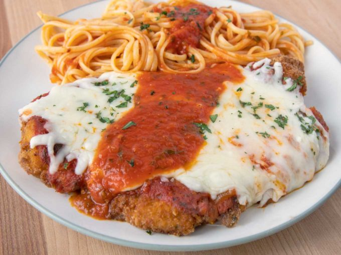

Chicken Parm

Description
One of my favorite Italian dishes will always be Chicken Parm.
Sadly too many restaurants fail at making this dish the way it should be made.
Keep reading to see how easy it is to make a Chicken Parm that will blow away
your favorite Italian restaurant's version.
Ingredients
- 24 oz chicken breast four 6 ounce boneless skinless breasts, lightly pounded
- 8 oz mozzarella cheese shredded
- 12 oz spaghetti sauce your favorite brand or see my recipe
- 2 tsp parsley finely chopped
- 1 cup flour seasoned with sea salt and black pepper
- 2 cups bread crumbs Italian seasoned or your choice
- 2 large eggs
- 2 oz water or milk
- vegetable oil for frying chicken cutlets
Steps
- Place the chicken breasts on a cutting board lined with plastic wrap. Cover the chicken with another sheet of plastic wrap and using a meat hammer lightly pound the chicken breasts (see notes).
- Set up a breading station with flour seasoned with sea salt and black pepper, egg wash and Italian seasoned bread crumbs.
- Coat the chicken breasts with the seasoned flour. Then place in the egg wash and finally in the bread crumbs. Make sure you get a good coating of each ingredient on the chicken breasts, completely coating them.
- Heat a large saute pan on high heat and add about a half an inch of vegetable oil. Carefully place the breaded chicken cutlets into the oil using tongs. Add as many as you can into your pan without crowding them.
Let them saute until they get a nice golden brown color. Using tongs turn them over and saute the other side until golden brown.
- Drain the fried chicken cutlets on baking racks over sheet pans (or baking sheets).
- Place the fried chicken cutlets in a baking dish. Top each cutlet with about ⅓ cup of spaghetti sauce, covering the chicken cutlet.
- Add two ounces of shredded mozzarella cheese on top of the marinara sauce.
- Sprinkle the chopped parsley on top of the mozzarella cheese.
- Bake at 350 degrees F for 20 minutes or until the cheese is nicely melted.
*make sure the fried chicken cutlet has reached a minimum internal temperature of 165 degrees F
- Remove from the oven and serve immediately with your favorite pasta.
Notes
** While pounding the chicken breast, don’t strike straight down, you want to almost push the meat towards the outer edges while you pound. We want the breast intact and this is the best way gain size without breaking apart the breast. **